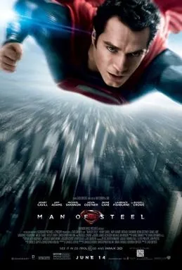

The genetics
The film gives Superman's origin a eugenic backdrop. Krypton is a society in which every citizen is bred artificially to fulfil a specific role, with a predetermined purpose written into their genetic code. The Codex, a repository of the genetic information of the whole species, is the key to this system. Jor-El's rebellion is to have a son by natural birth, free to choose his own path, and to hide the Codex in the boy's cells, so that Kal-El carries within him the possibility of rebuilding his people. Zod, in contrast, born from an artificial breeding chamber, is guided only by the purpose he was created to fulfil, the survival of Krypton at any cost, and wants to extract the Codex, which would kill Clark. The film thus contrasts genetic determinism with free will: Superman's freedom lets him make his own difficult choices, including the decision to kill Zod. Engineering people for social roles is pure fiction.
The story
On the planet Krypton, whose population is bred artificially, the scientist Jor-El warns the ruling council that reckless mining of the planet's core is about to destroy it. He and his wife Lara have had a son, Kal-El, the first child born naturally in centuries; Jor-El steals the Codex, which holds the genetic blueprint of the Kryptonian people, infuses it into the baby and sends him to Earth before General Zod kills him in a failed coup. Zod and his followers are banished to the Phantom Zone shortly before Krypton explodes. On Earth, Kal-El is raised as Clark Kent by the Kents in Kansas and grows up hiding his powers. As an adult he learns his origins from an artificial intelligence modelled on his father. Zod, freed by Krypton's destruction, arrives seeking the Codex in order to turn Earth into a new Krypton, which would wipe out humanity. Clark, now Superman, destroys Zod's terraforming machine and finally kills Zod.